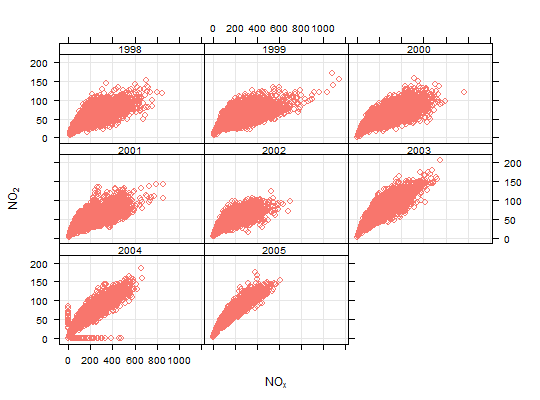
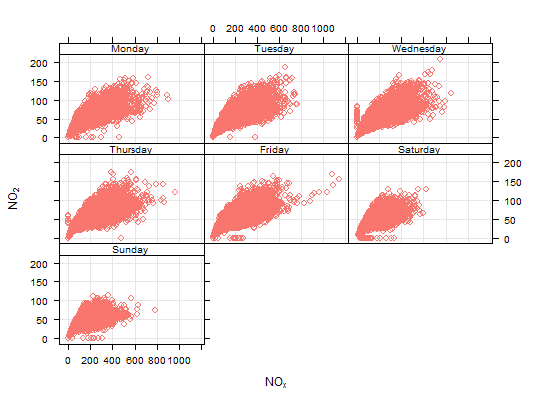

Flexible scatter plots
Scatter plots with conditioning and three main approaches: conventional scatterPlot, hexagonal binning and kernel density estimates. The former also has options for fitting smooth fits and linear models with uncertainties shown.
scatterPlot(mydata, x = "nox", y = "no2", z = NA, method = "scatter", group = NA, avg.time = "default", data.thresh = 0, statistic = "mean", percentile = NA, type = "default", smooth = FALSE, spline = FALSE, linear = FALSE, ci = TRUE, mod.line = FALSE, cols = "hue", plot.type = "p", key = TRUE, key.title = group, key.columns = 1, key.position = "right", strip = TRUE, log.x = FALSE, log.y = FALSE, x.inc = NULL, y.inc = NULL, limits = NULL, windflow = NULL, y.relation = "same", x.relation = "same", ref.x = NULL, ref.y = NULL, k = 100, dist = 0.1, map = FALSE, auto.text = TRUE, ...)
Arguments
- mydata
- A data frame containing at least two numeric variables to plot.
- x
- Name of the x-variable to plot. Note that x can be a date field or
a factor. For example,
xcan be one of theopenairbuilt in types such as"year"or"season". - y
- Name of the numeric y-variable to plot.
- z
- Name of the numeric z-variable to plot for
method = "scatter"ormethod = "level". Note that formethod = "scatter"points will be coloured according to a continuous colour scale, whereas formethod = "level"the surface is coloured. - method
- Methods include “scatter” (conventional scatter plot),
“hexbin” (hexagonal binning using the
hexbinpackage). “level” for a binned or smooth surface plot and “density” (2D kernel density estimates). - group
- The grouping variable to use, if any. Setting this to a variable in the data frame has the effect of plotting several series in the same panel using different symbols/colours etc. If set to a variable that is a character or factor, those categories or factor levels will be used directly. If set to a numeric variable, it will split that variable in to quantiles.
- avg.time
- This defines the time period to average to. Can be
“sec”, “min”, “hour”, “day”,
“DSTday”, “week”, “month”, “quarter”
or “year”. For much increased flexibility a number can
precede these options followed by a space. For example, a
timeAverage of 2 months would be
period = "2 month". See functiontimeAveragefor further details on this. This option se useful as one method by which the number of points plotted is reduced i.e. by choosing a longer averaging time. - data.thresh
- The data capture threshold to use (
the data using
avg.time. A value of zero means that all available data will be used in a particular period regardless if of the number of values available. Conversely, a value of 100 will mean that all data will need to be present for the average to be calculated, else it is recorded asNA. Not used ifavg.time = "default". - statistic
- The statistic to apply when aggregating the data; default
is the mean. Can be one of "mean", "max", "min", "median", "frequency",
"sd", "percentile". Note that "sd" is the standard deviation and
"frequency" is the number (frequency) of valid records in the period.
"percentile" is the percentile level (
using the "percentile" option - see below. Not used if
avg.time = "default". - percentile
- The percentile level in % used when
statistic = "percentile"and when aggregating the data withavg.time. The default is 95. Not used ifavg.time = "default". - type
typedetermines how the data are split i.e. conditioned, and then plotted. The default is will produce a single plot using the entire data. Type can be one of the built-in types as detailed incutDatae.g. “season”, “year”, “weekday” and so on. For example,type = "season"will produce four plots --- one for each season. It is also possible to choosetypeas another variable in the data frame. If that variable is numeric, then the data will be split into four quantiles (if possible) and labelled accordingly. If type is an existing character or factor variable, then those categories/levels will be used directly. This offers great flexibility for understanding the variation of different variables and how they depend on one another. Type can be up length two e.g.type = c("season", "weekday")will produce a 2x2 plot split by season and day of the week. Note, when two types are provided the first forms the columns and the second the rows.- smooth
- A smooth line is fitted to the data if
TRUE; optionally with 95% confidence intervals shown. Formethod = "level"a smooth surface will be fitted to binned data. - spline
- A smooth spline is fitted to the data if
TRUE. This is particularly useful when there are fewer data points or when a connection line between a sequence of points is required. - linear
- A linear model is fitted to the data if
TRUE; optionally with 95% confidence intervals shown. The equation of the line and R2 value is also shown. - ci
- Should the confidence intervals for the smooth/linear fit be shown?
- mod.line
- If
TRUEthree lines are added to the scatter plot to help inform model evaluation. The 1:1 line is solid and the 1:0.5 and 1:2 lines are dashed. Together these lines help show how close a group of points are to a 1:1 relationship and also show the points that are within a factor of two (FAC2).mod.lineis appropriately transformed when x or y axes are on a log scale. - cols
- Colours to be used for plotting. Options include
“default”, “increment”, “heat”, “jet”
and
RColorBrewercolours --- see theopenairopenColoursfunction for more details. For user defined the user can supply a list of colour names recognised by R (typecolours()to see the full list). An example would becols = c("yellow", "green", "blue") - plot.type
latticeplot type. Can be “p” (points --- default), “l” (lines) or “b” (lines and points).- key
- Should a key be drawn? The default is
TRUE. - key.title
- The title of the key (if used).
- key.columns
- Number of columns to be used in the key. With many
pollutants a single column can make to key too wide. The user can thus
choose to use several columns by setting
columnsto be less than the number of pollutants. - key.position
- Location where the scale key is to plotted. Allowed arguments currently include “top”, “right”, “bottom” and “left”.
- strip
- Should a strip be drawn? The default is
TRUE. - log.x
- Should the x-axis appear on a log scale? The default is
FALSE. IfTRUEa well-formatted log10 scale is used. This can be useful for checking linearity once logged. - log.y
- Should the y-axis appear on a log scale? The default is
FALSE. IfTRUEa well-formatted log10 scale is used. This can be useful for checking linearity once logged. - x.inc
- The x-interval to be used for binning data when
method = "level". - y.inc
- The y-interval to be used for binning data when
method = "level". - limits
- For
method = "level"the function does its best to choose sensible limits automatically. However, there are circumstances when the user will wish to set different ones. The limits are set in the formc(lower, upper), solimits = c(0, 100)would force the plot limits to span 0-100. - windflow
- This option allows a scatter plot to show the wind
speed/direction shows as an arrow. The option is a list
e.g.
windflow = list(col = "grey", lwd = 2, scale = 0.1). This option requires wind speed (ws) and wind direction (wd) to be available. The maximum length of the arrow plotted is a fraction of the plot dimension with the longest arrow beingscaleof the plot x-y dimension. Note, if the plot size is adjusted manually by the user it should be re-plotted to ensure the correct wind angle. The list may contain other options topanel.arrowsin thelatticepackage. Other useful options includelength, which controls the length of the arrow head andangle, which controls the angle of the arrow head. This option works best where there are not too many data to ensure over-plotting does not become a problem. - y.relation
- This determines how the y-axis scale is plotted. “same” ensures all panels use the same scale and “free” will use panel-specific scales. The latter is a useful setting when plotting data with very different values.
- x.relation
- This determines how the x-axis scale is plotted. “same” ensures all panels use the same scale and “free” will use panel-specific scales. The latter is a useful setting when plotting data with very different values.
- ref.x
- See
ref.yfor details. - ref.y
- A list with details of the horizontal lines to be
added representing reference line(s). For example,
ref.y = list(h = 50, lty = 5)will add a dashed horizontal line at 50. Several lines can be plotted e.g.ref.y = list(h = c(50, 100), lty = c(1, 5), col = c("green", "blue")). Seepanel.ablinein thelatticepackage for more details on adding/controlling lines. - k
- Smoothing parameter supplied to
gamfor fitting a smooth surface whenmethod = "level". - dist
- When plotting smooth surfaces (
method = "level"andsmooth = TRUE,distcontrols how far from the original data the predictions should be made. Seeexclude.too.farfrom themgcvpackage. Data are first transformed to a unit square. Values should be between 0 and 1. - map
- Should a base map be drawn? This option is under development.
- auto.text
- Either
TRUE(default) orFALSE. IfTRUEtitles and axis labels will automatically try and format pollutant names and units properly e.g. by subscripting the ‘2’ in NO2. - ...
- Other graphical parameters are passed onto
cutDataand an appropriatelatticeplot function (xyplot,levelplotorhexbinplotdepending onmethod). For example,scatterPlotpasses the optionhemisphere = "southern"on tocutDatato provide southern (rather than default northern) hemisphere handling oftype = "season". Similarly, for the default casemethod = "scatter"common axis and title labelling options (such asxlab,ylab,main) are passed toxyplotviaquickTextto handle routine formatting. Other common graphical parameters, e.g.layoutfor panel arrangement,pchfor plot symbol andlwdandltyfor line width and type, as also available (see examples below). Formethod = "hexbin"it can be useful to transform the scale if it is dominated by a few very high values. This is possible by supplying two functions: one that that applies the transformation and the other that inverses it. For log scaling (the default) for example,trans = function(x) log(x)andinv = function(x) exp(x). For a square root transform usetrans = sqrtandinv = function(x) x^2. To not carry out any transformation the optionstrans = NULLandinv = NULLshould be used.
Value
As well as generating the plot itself, scatterPlot also
returns an object of class ``openair''. The object includes three main
components: call, the command used to generate the plot;
data, the data frame of summarised information used to make the
plot; and plot, the plot itself. If retained, e.g. using
output <- scatterPlot(mydata, "nox", "no2"), this output can be
used to recover the data, reproduce or rework the original plot or
undertake further analysis.
An openair output can be manipulated using a number of generic operations,
including print, plot and summary.
Details
The scatterPlot is the basic function for plotting scatter plots in
flexible ways in openair. It is flexible enough to consider lots of
conditioning variables and takes care of fitting smooth or linear
relationships to the data.
There are four main ways of plotting the relationship between two
variables, which are set using the method option. The default
"scatter" will plot a conventional scatterPlot. In cases where there
are lots of data and over-plotting becomes a problem, then method =
"hexbin" or method = "density" can be useful. The former requires
the hexbin package to be installed.
There is also a method = "level" which will bin the x and
y data according to the intervals set for x.inc and
y.inc and colour the bins according to levels of a third variable,
z. Sometimes however, a far better understanding of the relationship
between three variables (x, y and z) is gained by
fitting a smooth surface through the data. See examples below.
A smooth fit is shown if smooth = TRUE which can help show the
overall form of the data e.g. whether the relationship appears to be linear
or not. Also, a linear fit can be shown using linear = TRUE as an
option.
The user has fine control over the choice of colours and symbol type used.
Another way of reducing the number of points used in the plots which can
sometimes be useful is to aggregate the data. For example, hourly data can
be aggregated to daily data. See timePlot for examples here.
By default plots are shown with a colour key at the bottom and in the case
of conditioning, strips on the top of each plot. Sometimes this may be
overkill and the user can opt to remove the key and/or the strip by setting
key and/or strip to FALSE. One reason to do this is to
maximise the plotting area and therefore the information shown.
See also
linearRelation, timePlot and
timeAverage for details on selecting averaging times and
other statistics in a flexible way
Examples
# load openair data if not loaded already data(mydata) # basic use, single pollutant scatterPlot(mydata, x = "nox", y = "no2")# scatterPlot by year scatterPlot(mydata, x = "nox", y = "no2", type = "year")# scatterPlot by day of the week, removing key at bottom scatterPlot(mydata, x = "nox", y = "no2", type = "weekday", key = FALSE)# example of the use of continuous where colour is used to show # different levels of a third (numeric) variable # plot daily averages and choose a filled plot symbol (pch = 16) # select only 2004 ## Not run: ------------------------------------ # dat2004 <- selectByDate(mydata, year = 2004) # scatterPlot(dat2004, x = "nox", y = "no2", z = "co", avg.time = "day", pch = 16) # # # show linear fit, by year # scatterPlot(mydata, x = "nox", y = "no2", type = "year", smooth = # FALSE, linear = TRUE) # # # do the same, but for daily means... # scatterPlot(mydata, x = "nox", y = "no2", type = "year", smooth = # FALSE, linear = TRUE, avg.time = "day") # # # log scales # scatterPlot(mydata, x = "nox", y = "no2", type = "year", smooth = # FALSE, linear = TRUE, avg.time = "day", log.x = TRUE, log.y = TRUE) # # # also works with the x-axis in date format (alternative to timePlot) # scatterPlot(mydata, x = "date", y = "no2", avg.time = "month", # key = FALSE) # # ## multiple types and grouping variable and continuous colour scale # scatterPlot(mydata, x = "nox", y = "no2", z = "o3", type = c("season", "weekend")) # # # use hexagonal binning # # library(hexbin) # # basic use, single pollutant # scatterPlot(mydata, x = "nox", y = "no2", method = "hexbin") # # # scatterPlot by year # scatterPlot(mydata, x = "nox", y = "no2", type = "year", method = # "hexbin") # # # ## bin data and plot it - can see how for high NO2, O3 is also high # # scatterPlot(mydata, x = "nox", y = "no2", z = "o3", method = "level", dist = 0.02) # # # ## fit surface for clearer view of relationship - clear effect of # ## increased O3 # # scatterPlot(mydata, x = "nox", y = "no2", z = "o3", method = "level", # x.inc = 10, y.inc = 2, smooth = TRUE) ## ---------------------------------------------